ギリシャ
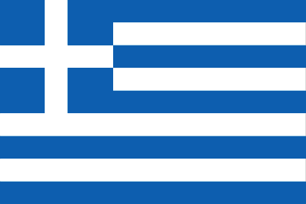
1.位置や分布
ギリシャはヨーロッパの南東端あり、アジアとアフリカとの交差点にある。
バルカン半島の南端に位置し、北西にはアルバニア、北に北マケドニア共和国、ブルガリア、東にトルコと接する。
本土の東にはエーゲ海、西にはイオニア海。南には地中海がそれぞれ位置する。
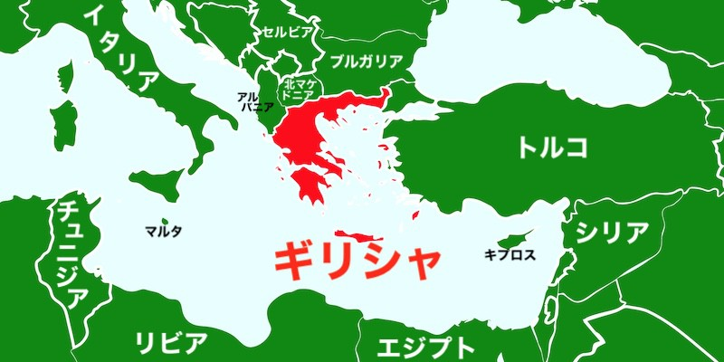
2.場所
海岸線は全長1万3,676キロメートルで地中海盆地最長かつ世界第11位である。
国土の約80%は山岳地帯であり、オリンポス山は2,917メートルで同国最高峰である。
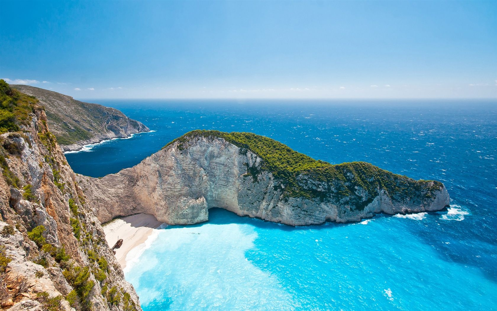
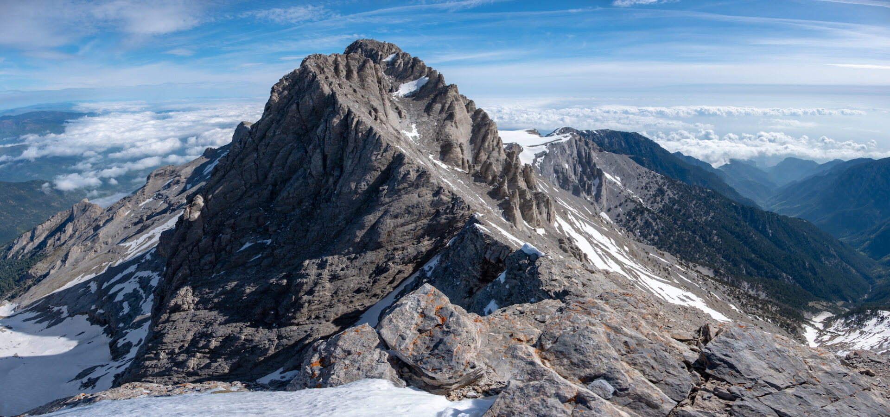
年平均気温は18.9℃。月平均気温の最低気温は10.1℃最高気温は29.0℃と温和で過ごしやすい地中海性気候に属している。
夏の降水量が少ないので湿度が低く、日本のような蒸し暑さはない。
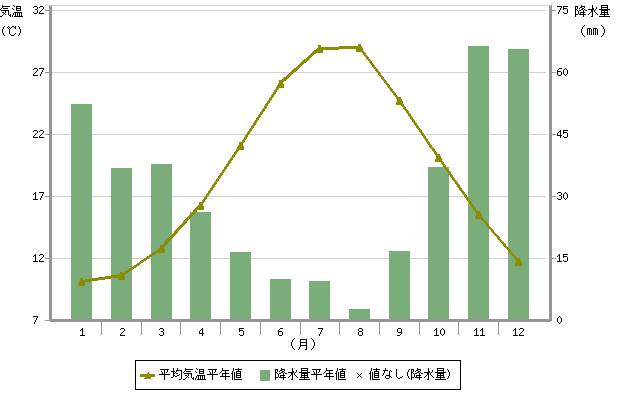
3.人間と周囲環境との相互依存関係
ギリシャでは地中海性気候や石灰石の土壌を活かし、オリーブの生産量が2022年度において世界2位である。
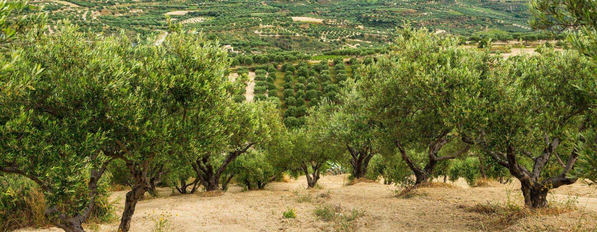
1.に書いてある通りギリシャはエーゲ海、イオニア海、地中海に囲まれているので古来より海運を活かし
様々な物や情報を取り入れることで発展を遂げ、2024年の商船 保有船腹量は世界第1位の海運大国である。
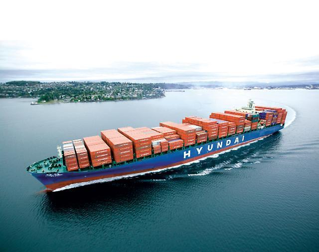
4.空間的相互依存作用
ギリシャの料理は地中海料理であるが東ローマ帝国やオスマン帝国があった時代で他国の食文化に影響され、
西方のイタリア料理のみならずトルコ料理やレバノン料理などの東方の地中海料理との共通点も多い。
（下の画像はドルマ。オスマン帝国が栄えていた時代にトルコから伝わった。）
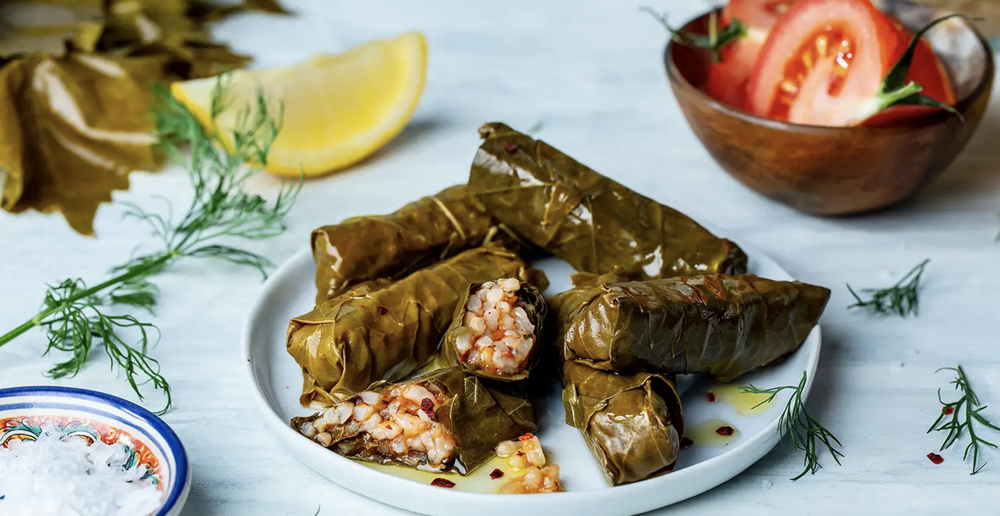
5.地域
ギリシャ独自の特徴は、公用語がギリシャ語でありアルファベットを使用せずギリシャ文字を使用する。
ギリシャ文字は英語やその他多くの言語のアルファベットの起源となったことで知られている。
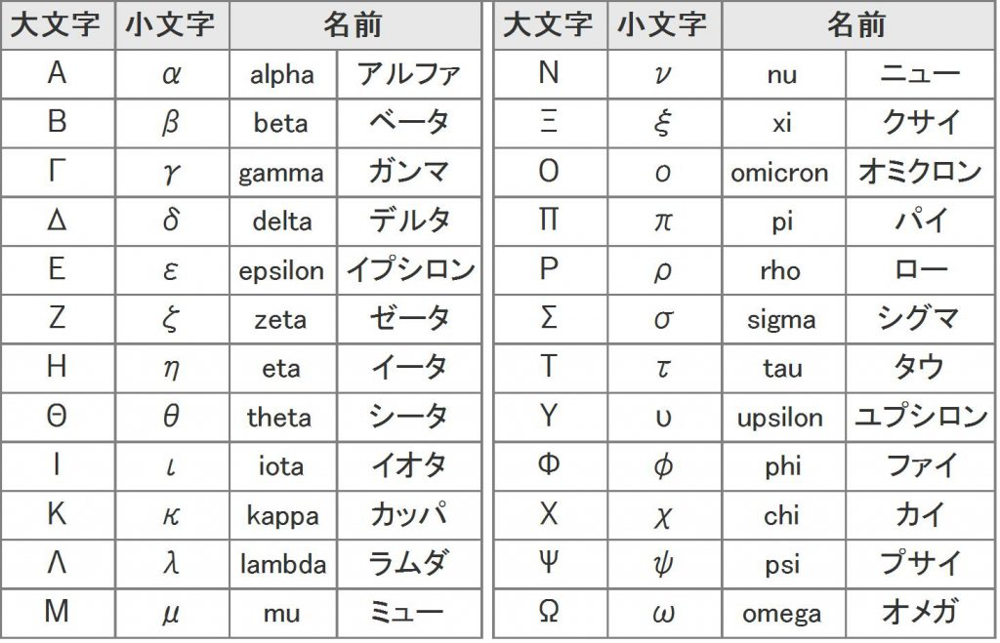
6.SDGs
ギリシャでは島が多い地理的特徴を活かして、風力発電の拡大を進めている。
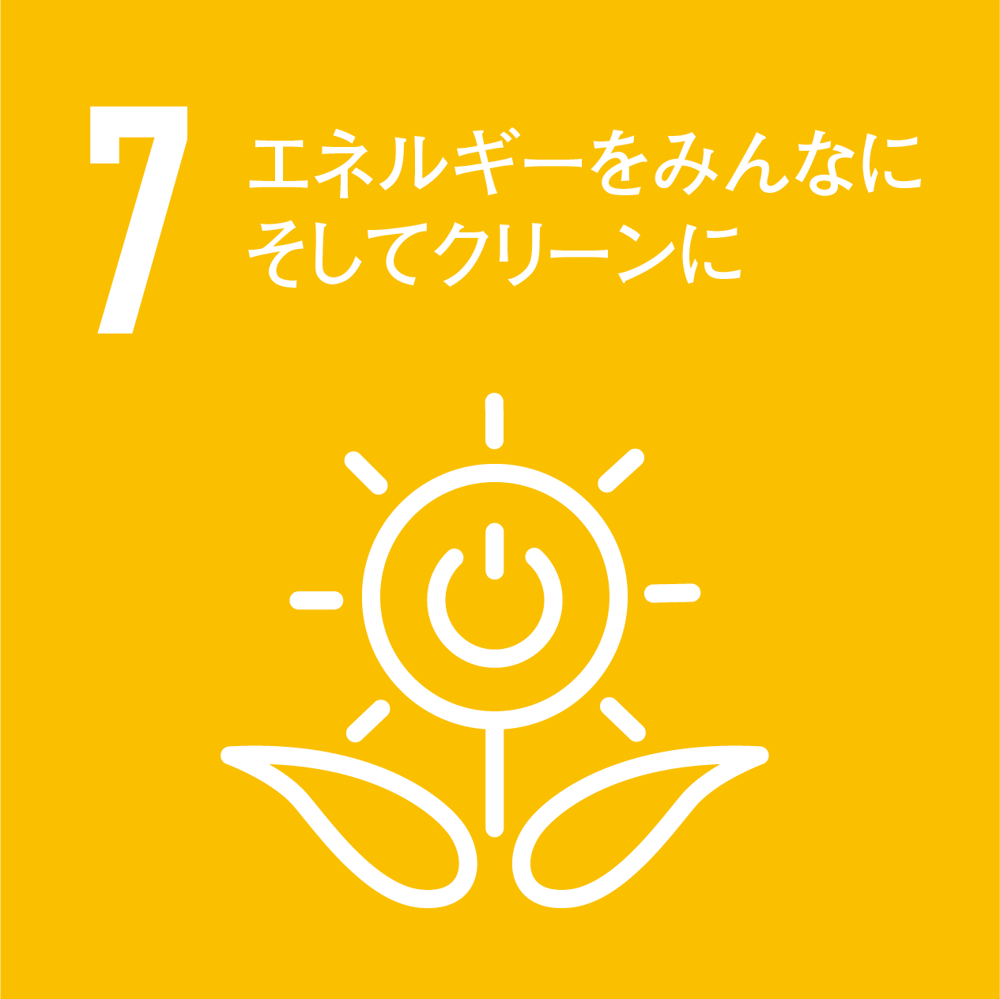
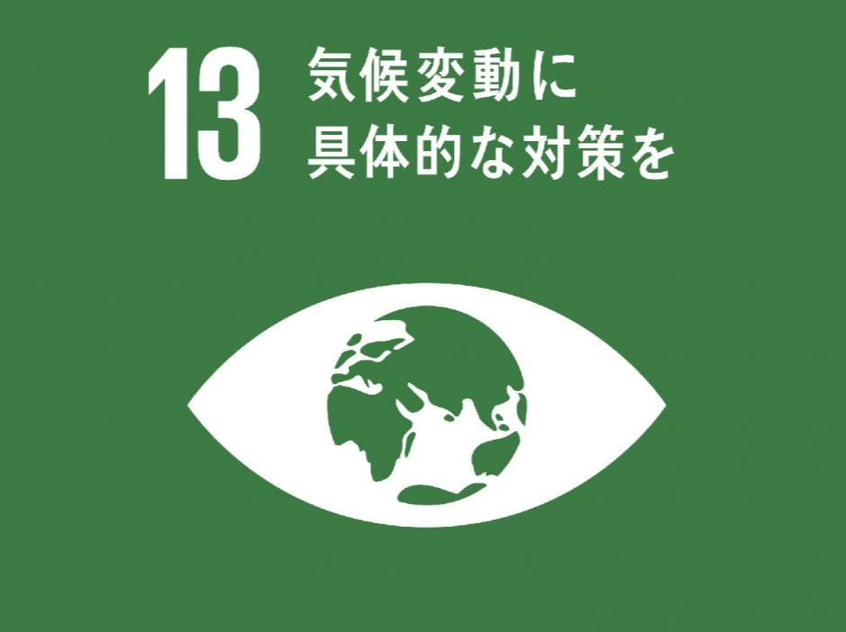
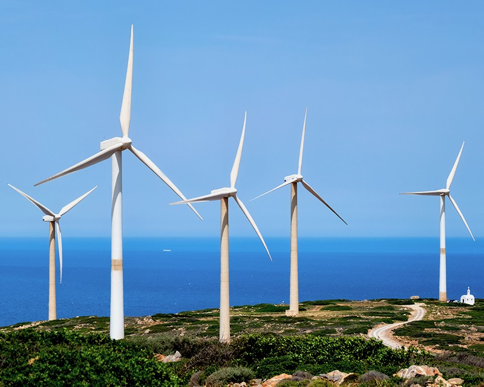